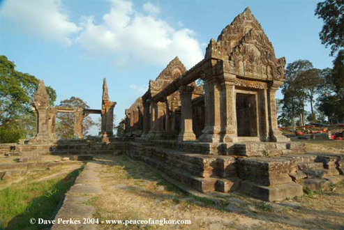
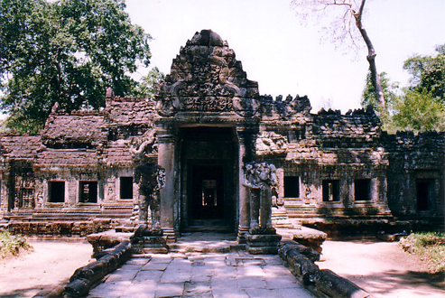
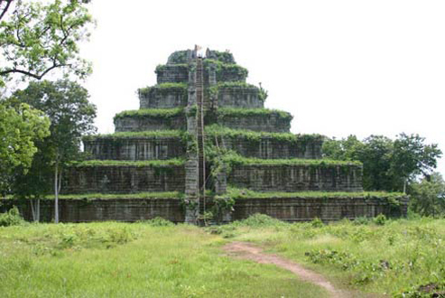
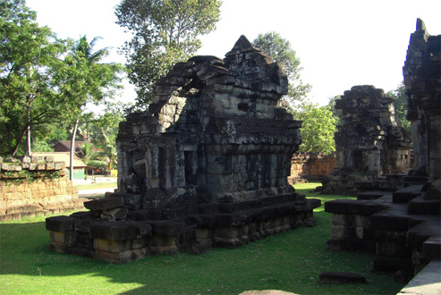
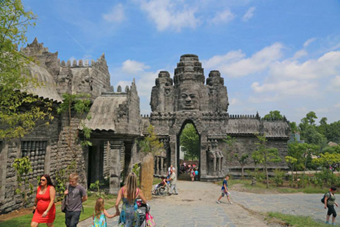

ខេត្តព្រះវិហារ
ខេត្តព្រះវិហារស្ថិតនៅក្នុងភូមិសាស្រ្តទិសឧត្តរនៃព្រះរាជាណាចក្រកម្ពុជា ដែលមានចម្ងាយពីរាជធានីភ្នំពេញ ប្រមាណចំងាយ៣២០គីឡូម៉ែត្រ ជាខេត្តស្ថិតនៅតំបន់ខ្ពង់រាប តំបន់ព្រៃភ្នំ ភូមិសាស្ត្រដែលមានភាពទូលាយ សំបូរព្រៃឈើធំៗជាជំរកសត្វព្រៃគ្រប់ប្រភេទ រ៉ែ ធនធានធម្មជាតិ
និងសំនង់ប្រវត្តិសាស្ត្រ ប្រាសាទបុរាណ។ ព្រំប្រទល់ខាងជើងទល់នឹងប្រទេសថៃ និងប្រទេសឡាវ ប៉ែកខាងត្បូងទល់នឹងខេត្តកំពង់ធំ ប៉ែកខាងលិចទល់នឹង ខេត្តសៀមរាប និងឧត្តរមានជ័យ ប៉ែកខាងកើតទល់នឹង ខេត្តស្ទឹងត្រែង។ ខេត្តព្រះវិហារមានផ្ទៃដីសរុប ១៤.០៣១ គ.ម២ (???) ក្នុងនោះផ្ទៃដីបង្ករបង្កើនផលមានចំនួន
២០.០០០ហិចតា។ ខេត្តចែកចេញជាំ៧ស្រុករួមមាន៤៩ឃុំដែលមានភូមិសរុប២០៨ភូមិ។ ប្រជាពលរដ្ឋនៅខេត្តព្រះវិហារភាគច្រើនជាជនជាតិខ្មែរនិងមានជនជាតិភាគតិច កួយ មានប្រមាណ២០% មានរបរធ្វើស្រែ ចំការ រកជ័រ រកវល្លិ៍ លក់ដូរ និងនេសាទត្រីបន្តិចបន្តួច។
ការងារធ្វើស្រែចំការពុំសូវទទួលបានទិន្នផលខ្ពស់ឡើយ ព្រោះដោយបងប្អូនធ្វើតាមរបៀបអភិរក្សនិយម គឺធ្វើស្រែប្រវាសមេឃ។
-> ប្រាសាទព្រះវិហារ

ប្រាសាទព្រះវិហារ (Prasat Preah Vihear) ស្ថិតនៅភាគខាងជើងនៃប្រទេសកម្ពុជាក្នុងភូមិសាស្ត្រ ភូមិធម្មជាតិ ឃុំស្រអែម ស្រុកជាំក្សាន្ត ខេត្តព្រះវិហារ។ ដែលពីអតីកាលស្ថិតនៅក្នងស្រុកជាំក្សាន្ត នៃខេត្តកំពង់ធំ។ ប្រាសាទព្រះវិហារជាប្រាសាទភ្នំដែលកសាងនៅលើកំពូលភ្នំព្រះវិហារនៃជួរភ្នំដងរែក
ដែលមានរយៈកម្ពស់ ៦២៥ម៉ែត្រ ធៀបទៅនិងទឹកសមុទ្រ។ សិលាចារឹកប្រាសាទខ្នា បានហៅភ្នំដងរែកថា ភ្នំកំផែង ឬភ្នំជញ្ជាំង។ ប្រជាជនថៃហៅភ្នំដងរែកថា ភ្នំវែង ចំណែកប្រជាជនឡាវហៅថា ភ្នំមឿង។ ប្រាសាទព្រះវិហារស្ថិតនៅជាប់នឹងព្រំប្រទល់ខេត្តស៊ីសាកេត នៃប្រទេសថៃ។ ប្រាសាទព្រះវិហារមានចម្ងាយប្រមាណ
១០០គីឡូម៉ែត្រពីទីរួមខេត្តព្រះវិហារ ជាង ១៥០គីឡូម៉ែត្រពីទីរួម ខេត្តសៀមរាប និងប្រមាណ ៤០០គីឡូម៉ែត្រពី រាជធានីភ្នំពេញ ។ ក្នុងការធ្វើដំណើរទៅកាន់ប្រាសាទព្រះវិហារគេអាចជ្រើសរើសតាមរយៈផ្លូវពីរគឺ៖ ចេញពី ខេត្តសៀមរាបតាមផ្លូវទៅកាន់ ប្រាសាទបន្ទាយស្រី ឆ្ពោះទៅកាន់
ស្រុកអន្លង់វែង រហូតមកដល់វង្វង់មូលស្រអែម រួចបន្តដំណើរប្រហែល ២០គីឡូម៉ែត្រទៀត និងដល់ចំណតគ១ ដែលជាកន្លែងលក់សំបុត្រឡើងប្រាសាទ។ ចេញដំណើរពី រាជធានីភ្នំពេញ ទៅ ខេត្តកំពង់ធំ បន្ទាប់មកដល់ថ្នល់បំបែកសៀមរាប-ព្រះវិហារ រួចបត់ស្តាំកាត់តាម រមណីយដ្ឋានសំបូរព្រៃគុក ប្រាសាទសំបូរព្រៃគុក
រហូតដល់ផ្លូវបំបែកភ្នំដែករួចបត់ឆ្វេងមកទីរួម ខេត្តព្រះវិហារ ហើយបន្តដំណើររហូតដល់វង្វង់មូលស្រអែម។ នៅលើខ្នងភ្នំដងរែក (៨០០ គុណនឹង ៤០០ ម៉ែត្រការ៉េ)។ ដងភ្នំនេះមានលក្ខណៈចោទខ្លាំងពីខាងប្រទេសកម្ពុជា និងជម្រាលពីខាងប្រទេសថៃ។ សព្វថ្ងៃនេះអ្នកលក់ដូរ និងប្រជាជនតំបន់នោះភាគច្រើនតែងតែឡើងទៅលើភ្នំតាមផ្លូវស៊ី១
ពីព្រោះថាផ្លូវនោះវាងាយស្រួលក្នុងការធ្វើដំណើរ។
-> ប្រាសាទបាកាន ឬព្រះខ័ន

ច្រកចូលសំខាន់របស់ប្រាសាទនេះស្ថិតនៅទិសខាងកើត ប៉ុន្តែភ្ញៀវទេសចរអាចចេញចូលពីទិសខាងលិច ឬទិសខាងជើងក៏បានដែរ។ នាខែវិច្ឆិកា ឆ្នាំ១៩៣៩ លោក មូរីស៍គ្លេសជាមន្ត្រីអភិរក្សអង្គរបានរកឃើញសិលាស្ដម្ភចារិកមួយផ្ទាំងកប់ដីនៅក្នុងបរិវេណនៃប្រាសាទនេះ។ ផ្ទាំងសិលាចារិកនោះមានកម្ពស់
១,៨៥ម៉ែត្រ សរសេរជាភាសាសំស្រ្កឹតមានចំនួន ១៧៨ ស្លោកគាថា ដែលបរិយាយអំពី ការបួងសួង ការលើកសរសើរព្រះរាជា ការតម្កល់ព្រះបដិមា ការចូលរួមថែទាំនិងផ្តល់តង្វាយពីព្រាហ្មផ្សេងៗ ពីស្តេចជ្វា ស្តេចចាម ស្តេចយួន និងពីអ្នកភូមិនៅជុំវិញប្រាសាទ ពិធីអភិសេកព្រះ និងផ្តល់ព័ត៌មានអំពីបារាយណ៍ជយតដាកដែលមានប្រាសាទនាគព័ន្ធស្ថិតនៅចំកណ្តាល។
សិលាចារិកនេះនិពន្ធដោយព្រះអម្ចាស់ វិរកុមារ ជាព្រះបុត្រាព្រះបាទជយវម្ម៌ទី៧[១]។ ប្រាសាទព្រះខ័ន មានរាងបួនជ្រុងទ្រវែង មានវិមាត្រប្រវែង ៨០០ ម. x ៧០០ ម. សង់ឡើងនៅរជ្ជកាលព្រះបាទជយវរ្ម័ន ទី ៧ តែពុំបានសង់រួចនៅក្នុងសម័យព្រះអង្គទេ មហាក្សត្រក្រោយៗ
បានសង់បន្ថែមបន្ដបន្ទាប់នៅគ្រិស្តសតវត្សទី ១២ - ១៣។ ក្បាច់រចនានៃប្រាសាទ មានលក្ខណៈដូចជាប្រាសាទបន្ទាយក្ដី និងប្រាសាទតាព្រហ្មដែរ។ ប្រាសាទព្រះខ័ន ស្ថិតនៅតាមផ្លូវវង់ធំ ដោយចេញតាមផ្លូវទ្វារដីឆ្នាំងនៃ អង្គរធំ។ ប្រាសាទនេះកសាងឡើងនៅគ្រិស្តសតវត្យរ៍ទី
១២ ក្នុងឆ្នាំ ១១៩១ ដោយព្រះបាទជយវរ្ម័ន ទី ៧ ឧទ្ទិសដល់ព្រះវររាជបិតារបស់ព្រះអង្គ។ ទីអារាមនេះ មានទំហំ ៥៦ ហិចតា។ តាមសិលាចារឹកថា ប្រាសាទនេះសាងសង់នៅសមរភូមិចុងក្រោយ ដែលព្រះបាទជយវរ្ម័ន ទី ៧ បានផ្តួលរំលំពួកចាម។ ប្រាសាទនេះមានកំពែងបួនជាន់។
នៅកំពែងខាងក្រៅ ដែលបច្ចុប្បន្នរុំព័ទ្ធទៅដោយព្រៃ គឺជាកន្លែងដែលព្រះសង្ឃ និងសិស្សស្នាក់នៅក្នុងប្រាសាទនេះ។ នៅកំពែងជាន់ទីពីរ គឺជាកន្លែងគោរពសាសនា។
-> ប្រាសាទកោះកេរ្តិ៍

សព្វថៃ្ងនេះ យ៉ាងហោចណាស់ក្នុងមួយថៃ្ង មានភ្ញៀវទេសចរណ៍បរទេស ពី២០ ទៅ៤០នាក់ ដែលបានទៅទស្សនាតំបន់ប្រវត្តិសាស្រ្តកោះកេរ្តិ៍ នៅឃុំស្រយង់ ស្រុកគូលែន ខេត្តព្រះវិហារ បន្ទាប់ពីក្រុមហ៊ុនខាំសូមេធបានវិនិយោគទុនធ្វើផ្លូវល្អស្អាតរួចមក។ កំណើនភ្ញៀវទេសចរណ៍ ទៅកាន់តំបន់ប្រាសាទកោះកេរ្តិ៍ខាងលើនេះ
មិនបាននិយាយពីភ្ញៀវទេសចរណ៍ក្នុងស្រុកផងទេ។ លោកខេង សុមេធ នាយកក្រុមហ៊ុនខាំសូមេធ ដែលទទួលសិទ្ធិពីរាជរដ្ឋាភិបាលកម្ពុជាធ្វើការអភិវឌ្ឍនៅតំបន់ប្រាសាទកោះកេរ្តិ៍ ខេត្តព្រះវិហារ នោះបាននិយាយថា ផ្លូវប្រវែង ១០៥គីឡូម៉ែត្រចេញពីរង្វង់មូល ភ្នំគូលែនទៅដល់ ប្រាសាទកោះកេរ្តិ៍
គឺបានធ្វើរួចរាល់ហើយ។ តាមរយៈផ្លូវដ៏ស្អាតនោះ ធ្វើឲ្យចំនួនភ្ញៀវទេសចរណ៍បរទេស និងភ្ញៀវទេសចរណ៍ក្នុងស្រុក មានការកើនឡើងជាលំដាប់ លោកបាននិយាយថា ទោះបីជាផ្លូវនោះល្អហើយក្តី ក៏ក្រុមហ៊ុននៅតែកែសម្រួលជារៀងរាល់ថៃ្ង ដើម្បីឲ្យបានកាន់តែប្រសើរឡើងសម្រាប់ការធ្វើដំណើររបស់ភ្ញៀវទេសចរណ៍
បានប្រកបដោយសុវត្ថិភាព ក៏ដូចជាសម្រាប់ប្រជាពលរដ្ឋនៅក្នុងតំបន់មានភាពងាយស្រួលក្នុងការធ្វើដំណើរឆ្លងកាត់ ពីតំបន់មួយទៅតំបន់មួយផងដែរ។ ប្រាសាទកោះកេរ្តិ៍បានកសាងឡើងក្នុងរជ្ជកាលព្រះបាទជ័យវរ័្មនទី20 ឧទ្ទិសថ្វាយព្រះឥសូរតាមបែបព្រហ្មញ្ញសាសនា។ ប្រាសាទនេះពីដើមឈ្មោះឆកគគីរ
ឬផៃ្ទដីគោកគគីរ សព្វថៃ្ងហៅថា អតីតរាជធានីកោះកេរ្ត៍ មានទំហំផៃ្ទដី១៦X១៦គីឡូម៉ែត្រ រួមមាន៩៨ប្រាសាទ។ ប្រាសាទនេះមាន៧ជាន់ មានកំពស់ ៣៥ម៉ែត្រ ដែលកសាងឡើងតាំងពីសម័យបុរាណ ទុកសំរាប់ជាការគោរពបូជាតាមលទ្ធិព្រហ្មញ្ញសាសនា។ ប្រាសាទនេះមាន៧ជាន់ មានកំពស់ ៣៥ម៉ែត្រ ដែលកសាងឡើងតាំងពីសម័យបុរាណ
ទុកសំរាប់ជាការគោរពបូជាតាមលទ្ធិព្រហ្មញ្ញសាសនា។
-> ប្រាសាទក្រពុំឈូក

ប្រាសាទក្រពុំឈូក ស្ថិតនៅក្នុងឃុំរំដោះ ស្រុករវៀង ខេត្តព្រះវិហារ តាមបណ្តោយផ្លូវជាតិលេខ៦៤ មានចម្ងាយប្រមាណ ៤៥ គ.ម ពីទីរួមខេត្ត នោះគឺជាប្រាសាទបុរាណដែលបានកសាងឡើងនាសតវត្សរ៍ទី១០ ដើម្បីឧទ្ទិសថ្វាយដល់ព្រហ្មមញ្ញសាសនា។
ប្រាសាទក្រពុំឈូកនេះសង់ឡើងពីថ្មបាយក្រៀម និងថ្មភក់ ពិសេសមានក្បាច់រចនាតាមជញ្ជាំងប្រាសាទមួយចំនួនតូច ដោយការដាប់ និងចាក់ដោយពុម្ព។ ផ្អែកតាមការសិក្សារស្រាវជ្រាវពីអ្នកបុរាណវិទ្យា ប្រាសាទក្រពុំឈូក គឺជាសំណង់ប្រាសាទមិនទាន់សម្រេចចប់សព្វគ្រប់
ដោយផ្អែកតាមការធ្វើកំណាយទៅលើតំបន់នៃប្រាសាទទាំងមូលឃើញថា សរសរពេជ្រ ផ្តែរ និងទ្វារចូលទៅក្នុងប្រាសាទ គឺនៅមិនទាន់មានការដាប់ ឬឆ្លាក់រចនាលម្អអ្វីនោះឡើយ។ ចំពោះមូលហេតុដែលបណ្តាលឲ្យមានការអាក់ខាន ទៅលើការសាងសង់នៃប្រាសាទក្រពុំឈូក
អាចបង្កមកពីសង្រ្គាម និងការផ្លាស់ប្តូររបបគ្រប់គ្រងរបស់រាជា នាសម័យនោះ។ប្រាសាទក្រពុំឈូក ស្ថិតនៅក្នុងឃុំរំដោះ ស្រុករវៀង ខេត្តព្រះវិហារ តាមបណ្តោយផ្លូវជាតិលេខ៦៤ មានចម្ងាយប្រមាណ ៤៥ គ.ម ពីទីរួមខេត្ត នោះគឺជាប្រាសាទបុរាណដែលបានកសាងឡើងនាសតវត្សរ៍ទី១០
ដើម្បីឧទ្ទិសថ្វាយដល់ព្រហ្មមញ្ញសាសនា។ ប្រាសាទក្រពុំឈូកនេះសង់ឡើងពីថ្មបាយក្រៀម និងថ្មភក់ ពិសេសមានក្បាច់រចនាតាមជញ្ជាំងប្រាសាទមួយចំនួនតូច ដោយការដាប់ និងចាក់ដោយពុម្ព។ប្រាសាទក្រពុំឈូកនេះសង់ឡើងពីថ្មបាយក្រៀម និងថ្មភក់
ពិសេសមានក្បាច់រចនាតាមជញ្ជាំងប្រាសាទមួយចំនួនតូច ដោយការដាប់ និងចាក់ដោយពុម្ព។ប្រាសាទក្រពុំឈូកនេះសង់ឡើងពីថ្មបាយក្រៀម និងថ្មភក់ ពិសេសមានក្បាច់រចនាតាមជញ្ជាំងប្រាសាទមួយចំនួនតូច ដោយការដាប់ និងចាក់ដោយពុម្ព។
-> ប្រាសាទខ្លា

ប្រាសាទខ្លា ឬប្រជាជនថៃ ហៅថា Wat Pha Luang Ta Bua គឺជាប្រាសាទវត្ត មួយស្ថិតក្នុងខេត្ត Kachanaburi ប្រទេស ថៃ ហើយត្រូវបានគេ រកឃើញក្នុងឆ្នាំ ១៩៩៤។ ប្រាសាទនេះស្ថិត នៅចំកណ្តាលទ្រូងព្រៃ ដែលពោរ ពេញទៅ ដោយ ពពួកសត្វព្រៃរស់នៅ ជាច្រើនដូចជា ជ្រូកព្រៃ ក្តាន់
ក្របីទឹកជាពិសេសគឺសត្វខ្លា និងដំរីតែម្តង។ ភ្ញៀវទេសចរដែលមកទស្សនា ប្រាសាទវត្តខ្លា និងដំរី ពួកគេអាច រីករាយជាមួយនឹងការប៉ះលេងផ្ទាល់ជាមួយសត្វ ទាំងនោះ ដោយសារតែសត្វព្រៃនេះត្រូវបានគេបង្ហាត់វាឲ្យចេះរស់ នៅជាមួយមនុស្ស ដូច្នេះវាមិនបង្ក គ្រោះថ្នាក់ទេ។ រីឯសត្វដំរីវិញ
គេអាចជិះលេងកំសាន្ត និងចុះងូតទឹកជាមួយវានៅទន្លេ Kwai បានទៀតផង។ ក្រៅពីកន្លែងកំសាន្ត ខាងលើនេះ អ្នកទេសចរក៏អាចដើរ ទស្សនាលើស្ពានពិភពលោកដ៏ល្បីល្បាញ នៅតំបន់ ប្រាសាទខ្លានេះផងដែរ។ ប្រាសាទខ្លា ឬប្រជាជនថៃ ហៅថា Wat Pha Luang Ta Bua គឺជាប្រាសាទវត្ត មួយស្ថិតក្នុងខេត្ត
Kachanaburi ប្រទេស ថៃ ហើយត្រូវបានគេ រកឃើញក្នុងឆ្នាំ ១៩៩៤។ ប្រាសាទនេះស្ថិត នៅចំកណ្តាលទ្រូងព្រៃ ដែលពោរ ពេញទៅ ដោយ ពពួកសត្វព្រៃរស់នៅ ជាច្រើនដូចជា ជ្រូកព្រៃ ក្តាន់ ក្របីទឹកជាពិសេសគឺសត្វខ្លា និងដំរីតែម្តង។ ភ្ញៀវទេសចរដែលមកទស្សនា ប្រាសាទវត្តខ្លា និងដំរី ពួកគេអាច
រីករាយជាមួយនឹងការប៉ះលេងផ្ទាល់ជាមួយសត្វ ទាំងនោះ ដោយសារតែសត្វព្រៃនេះត្រូវបានគេបង្ហាត់វាឲ្យចេះរស់ នៅជាមួយមនុស្ស ដូច្នេះវាមិនបង្ក គ្រោះថ្នាក់ទេ។ រីឯសត្វដំរីវិញ គេអាចជិះលេងកំសាន្ត និងចុះងូតទឹកជាមួយវានៅទន្លេ Kwai បានទៀតផង។ ក្រៅពីកន្លែងកំសាន្ត ខាងលើនេះ អ្នកទេសចរក៏អាចដើរ
ទស្សនាលើស្ពានពិភពលោកដ៏ល្បីល្បាញ នៅតំបន់ ប្រាសាទខ្លានេះផងដែរ។